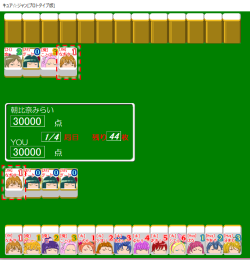
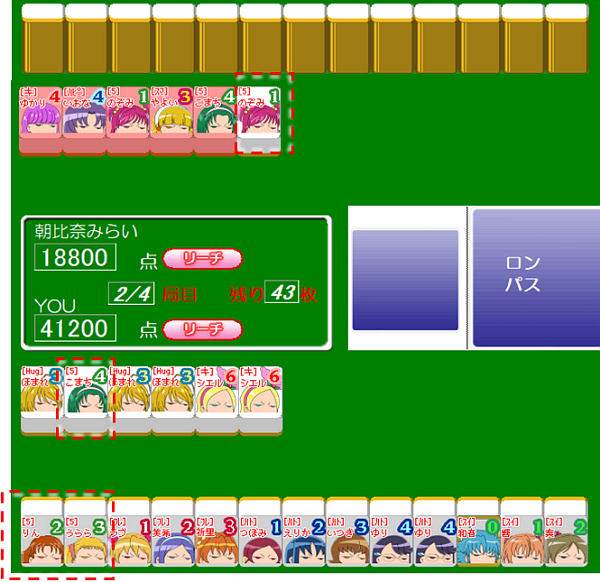
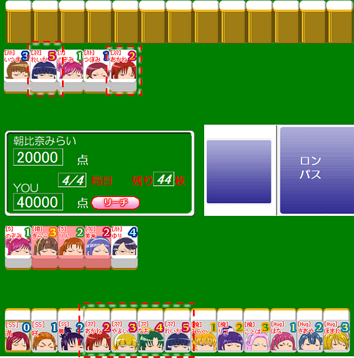

8.フリテン
自分で待ち牌を捨てている場合、ロンできない


よーし！これはなかなかいい手だよ！待ち牌は「なぎさ」だから…よし！相手が「なぎさ」を捨てた！ロン！

だめよ！みらい！あなたフリテンしているわ！
フリテン？フリテンってなに？
あなた、待ち牌の「なぎさ」を自分で捨てているでしょう。その場合はフリテンといって、相手からロン上がりすることはできないの。ロンじゃなくて自分でツモったのならOKだけどね。
複数の待ち牌がある場合、そのうち一枚でも捨てている場合、フリテンになる

う～ん、「のぞみ」か「こまち」が来れば上がりなんだけど、「こまち」を自分で捨てちゃってるから、またフリテンで「こまち」が出てもロンできないよ…
あ！「のぞみ」が捨てられた、それだよ！ロンで上がるねっ！
いや、それもフリテンだからロンできないわ･･････
ええ～っ、そうなの？
待ち牌が複数ある場合、それらのうち1枚でも自分で捨ててしまっている場合は、ロン上がりすることはできないの。
「引いたら上がれる牌が自分の捨て牌にあるときは、ロンで上がる事はできない」と覚えましょう。
リーチ後に上がり牌を見逃すとフリテンになる

↑きららを捨ててリーチ宣言している
「あかね」か「れいか」が来たらアガリ！リーチを宣言するねっ！…あ、しまった！うっかりしてて「れいか」が捨てられたのを見逃してツモっちゃったよ…ロンで上がれたのに……。
あ、でも今度は「あかね」が捨てられた！やったね！それでロンするよ！
残念、この場合もフリテンになるのよ。
ええ～っ、またフリテン～～もぉ～やだよぉ～
リーチを宣言した後、相手が捨てた牌で上がれるのに見逃してパスした場合、以降、ロンで上がることはできなくなります。
「一度ロンする権利を見逃したら、ロンはできない」と覚えましょうね。
フリテンルール・まとめ
まとめるとフリテンのルールはこんな感じね。
- アガリになる牌を自分で捨てている時はロン上がりできない
- リーチ後に相手が捨てた牌で上がれるのにパスした場合、その対局中は、もうロンで上がることはできない
う～ん、ねー、なんでこんな面倒くさいルールがあるの？不便だよぉ
でも、対戦相手もフリテンするとロンできないというのは同じなのよ。
ということは、フリテンルールを利用すれば、相手にロンされないように自分のみを守ることができるわ。
えっ？そうなの？？
例えば「自分の手牌はバラバラで上がれそうもないから、ここは自分で上がるのをあきらめて、せめて相手にロンされないように守りに徹しよう」
というシチュエーションを考えてみて。こういう打ち方をオリるって麻雀用語では言うんだけど、オリた場合、相手の捨て牌にある牌を捨てれば、ロンされないから安心ね。こういうのを安全牌と言います。
へーっ！なるほどー！
もしくは「相手がリーチをかけてきた。相手にロンされないようにしたい。」という時も、相手がリーチをかけた後に、自分が捨てた牌はロンされる心配はないから、これも安全牌としてどんどん捨てていくことができるわ。
そっか、そういうテクニックがあるんだね！気づかなかった！
リーチをかけた後は捨て牌が赤色で表示されるから、どの時点でリーチが宣言されたのかは牌の色を見て判断しましょう。
[8/9]